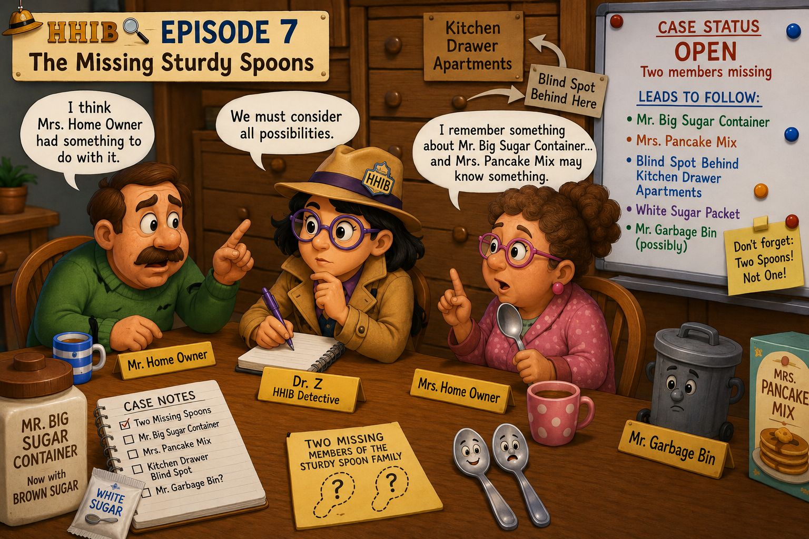

Episode 7: The Missing Spoon Family Members - Any New Clue?
The case of the missing members of the Sturdy Spoon Family was becoming more complicated every day.
There were not one, but two missing spoons.
Dr. Z sat at the Kitchen Complex investigation table with Mr. and Mrs. Home Owner.

Dr. Z: “Let us start again. We have two missing members of the Sturdy Spoon Family. Do either of you remember when you last saw them?”
Mr. Home Owner: “No.”
Dr. Z: “Nothing at all?”
Mr. Home Owner: “Nothing. But I think Mrs. Home Owner had something to do with it.”
Mrs. Home Owner looked offended.
Mrs. Home Owner: “Why me?”
Mr. Home Owner: “Because you move things around and then forget where you put them.”
Mrs. Home Owner: “That does not mean I lost two spoons!”
Dr. Z: “Please. We need evidence, not accusations.”
Mrs. Home Owner thought for a while.
Mrs. Home Owner: “I remember something about Mr. Big Sugar Container.”
Dr. Z immediately opened her notebook.
Dr. Z: “Go on.”
Mrs. Home Owner: “He used to carry white sugar. Later he started carrying brown sugar.”
Dr. Z: “And?”
Mrs. Home Owner: “I think there was still a white sugar packet associated with him. And maybe one of the missing Sturdy Spoons was inside that packet.”
Dr. Z looked up.
Dr. Z: “Maybe?”
Mrs. Home Owner: “Yes. Maybe.”
Mr. Home Owner: “See?”
Mrs. Home Owner: “See what?”
Mr. Home Owner: “Your memory.”
Mrs. Home Owner: “At least I remember something!”
Dr. Z ignored them and continued writing.
If one spoon had been left inside the white sugar packet, then something might have happened when Mr. Big Sugar Container changed from white sugar to brown sugar.
And if that packet had eventually been thrown away, then poor Mr. Garbage Bin might need to be questioned again.
Dr. Z did not like that idea.
Mr. Garbage Bin had already been questioned once.
Dr. Z: “Before we disturb Mr. Garbage Bin again, I want to speak to Mr. Big Sugar Container.”
Mrs. Home Owner: “You know where he lives now.”
Dr. Z: “Yes. I found his new address. I may visit him tomorrow.”
Mrs. Home Owner suddenly looked thoughtful again.
Mrs. Home Owner: “There is also Mrs. Pancake Mix.”
Dr. Z: “What about her?”
Mrs. Home Owner: “I think she may know something.”
Dr. Z: “What does she know?”
Mrs. Home Owner: “I don’t remember.”
Mr. Home Owner sighed.
Mr. Home Owner: “Exactly.”
Mrs. Home Owner: “Stop saying that!”
Dr. Z closed her notebook for a moment.
There was now another possibility too.
Behind the Kitchen Drawer Apartments was a narrow blind spot. A spoon could accidentally slip behind the drawers and remain there unnoticed for years.
Dr. Z: “We must also consider an accident.”
Mr. Home Owner: “An accident?”
Dr. Z: “Yes. One of the spoons may simply have fallen behind the Kitchen Drawer Apartments.”
Mrs. Home Owner: “That is possible.”
Mr. Home Owner: “And the other one?”
Dr. Z: “That is exactly the problem. We should not assume both spoons disappeared in the same way.”
The room became quiet.
Perhaps one spoon had disappeared with the white sugar packet.
Perhaps one had fallen behind the Kitchen Drawer Apartments.
Perhaps Mrs. Pancake Mix knew something.
Perhaps Mr. Big Sugar Container remembered something from the days when he carried white sugar.
Or perhaps everyone had forgotten everything.
Dr. Z looked at Mr. and Mrs. Home Owner.
Dr. Z: “For now, the case remains open.”
Mr. Home Owner: “I still think Mrs. Home Owner—”
Dr. Z: “No accusations without evidence.”
Mrs. Home Owner: “Thank you.”
Then she paused.
Mrs. Home Owner: “Although… I may have moved something once…”
Dr. Z slowly opened her notebook again.
Dr. Z: “Mrs. Home Owner…”
Mrs. Home Owner: “But I don’t remember what.”
Dr. Z closed the notebook.
The investigation would continue.
To be continued…
Junior Detectives’ Corner
Junior Detectives, HHIB needs your help!
Two members of the Sturdy Spoon Family are still missing. They may have disappeared together—or two completely different things may have happened to them.
Here are the current clues:
- Mr. Big Sugar Container once carried white sugar, but now carries brown sugar.
- A white sugar packet may have contained one of the missing spoons.
- Mrs. Pancake Mix may know something—but Mrs. Home Owner cannot remember what.
- There is a blind spot behind the Kitchen Drawer Apartments where a spoon could have fallen accidentally.
- Mr. Garbage Bin was previously cleared, but the white sugar packet may bring him back into the investigation.
Junior Detectives: What do you think happened to Spoon #1 and Spoon #2? Did they disappear together, or are we looking at two different mysteries?
Case Status
CASE OPEN — TWO STURDY SPOON FAMILY MEMBERS STILL MISSING.
Next steps: interview Mr. Big Sugar Container, speak with Mrs. Pancake Mix, investigate the blind spot behind the Kitchen Drawer Apartments, and decide whether Mr. Garbage Bin needs to be questioned again.
To be continued…